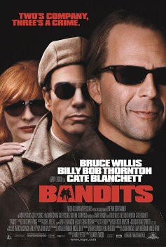

#4339 Banditen!
Alternativ: Bandits
 
 IMDB-Wertung: 6.5 / 10
IMDB-Wertung: 6.5 / 10  Metascore: 0
Metascore: 0 
Kaum aus dem Gefängnis ausgebrochen, macht sich das Ganovenduo Joe und Terry wieder daran, eine Bank nach der anderen zu erleichtern und so gelangen sie schon bald zu beachtlicher Berühmtheit. Als das Duo bei einem der Überfälle eine Frau als Geisel nimmt, kommen die Turbulenzen erst richtig in Gang. Kate, frustrierte Ehefrau und absolut gelangweilt von ihrem alltäglichen Trott, lässt sich nämlich so leicht nicht mehr abschütteln.
Jahr: 2001
Dauer: 117 Minuten
FSK: 12
Land: USA Studio: MGMTonspuren: DD2.0 - ,
Untertitel: Deutsch,
Auflösung: 720p (1280x720) Größe: 4014 MB
Genre: Komödie, Krimi, Drama, Liebe
Regisseur:  Barry Levinson
Barry Levinson
Drehbuch: Roald Dahl
Soundtrack:
Darsteller:
 Bruce Willis als Joe Blake
Bruce Willis als Joe Blake Billy Bob Thornton als Terry Collins
Billy Bob Thornton als Terry Collins Cate Blanchett als Kate Wheeler
Cate Blanchett als Kate Wheeler Troy Garity als Harvey Pollard
Troy Garity als Harvey Pollard Brían F. O'Byrne als Darill Miller
Brían F. O'Byrne als Darill Miller Stacey Travis als Cloe Miller
Stacey Travis als Cloe Miller Bobby Slayton als Darren Head
Bobby Slayton als Darren Head January Jones als Claire
January Jones als Claire- Azura Skye als Cheri
 Peggy Miley als Mildred Kronenberg
Peggy Miley als Mildred Kronenberg Richard Riehle als Lawrence Fife
Richard Riehle als Lawrence Fife- Anthony Burch als Phil
- Sam Levinson als Billy Saunders
- Scout LaRue Willis als Monica Miller
- Tallulah Belle Willis als Erika Miller
- John Evans als Ralph
 John Harrington Bland als Flamingo Clerk
John Harrington Bland als Flamingo Clerk- Cindy Goldfield als Debbie Days
- Heather Mathieson als Debbie Days
- Erin-Kate Whitcomb als Debbie Days
 Michael X. Sommers als Policeman
Michael X. Sommers als Policeman- Rich Sickler als Policeman
 Rick Shuster als L.A. Chopper Pilot
Rick Shuster als L.A. Chopper Pilot- Jane Velez-Mitchell als Female Debater
 Bill Blair als Bank Security Guard , uncredited
Bill Blair als Bank Security Guard , uncredited- Ethan Hoyt als News Reporter , uncredited
- Tia Hunnicutt als Hero Hostage , uncredited
- Rocky LaRochelle als Tomales Bank Manager , uncredited
- Jimmy Olea als Bar Patron , uncredited
- Eric Parkinson als TV Reporter 2 , uncredited
- Peter Quartaroli als Detective , uncredited
 John-Clay Scott als Cement Truck Driver , uncredited
John-Clay Scott als Cement Truck Driver , uncredited Sven-Ole Thorsen als Oregon State Prison Guard on Watchtower , uncredited
Sven-Ole Thorsen als Oregon State Prison Guard on Watchtower , uncredited- Sherrie La'Marr Wheeler als Debbie Day Cosmetics Conventioneer #4 , uncredited
- William Converse-Roberts als Charles Wheeler
 Micole Mercurio als Sarah Fife
Micole Mercurio als Sarah Fife Scott Burkholder als Wildwood Policeman
Scott Burkholder als Wildwood Policeman- Kim Bogus als Bend Bank Teller
- Michael Birnbaum als Desk Sergeant
- Joe Unitas als Detective
- Jennifer York als L.A. Reporter
- José Guillermo García als Local Youth
- Alfred De Contreras als Mexican Priest
- Peter Weireter als SWAT Commander
- Kerry Kilbride als Male Debater
- Mia Lee als Los Angeles Anchor
- Louis Mullen-LeRay als Band Member
- Peter Hutchison als Band Member
- Maya Rossi als Band Member
- Joan Palmateer als Bank Teller
Datei: X:\2001\Banditen! (2001, FSK12, 1280x720).mkv seit 12.09.2016
Festplatte: HD 1996-2002
 Es gibt insgesamt 102 Filme in der Gruppe '2001'
Es gibt insgesamt 102 Filme in der Gruppe '2001'